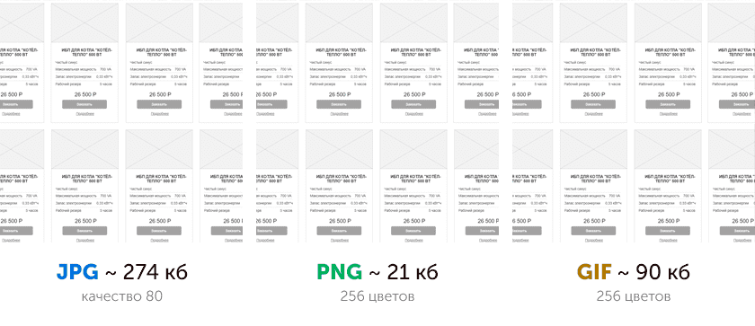

Графика остаётся главной причиной ожирения веб-страниц
Изображения составляют огромную долю интернет-трафика. Согласно HTTP Archive, 60% объёма веб-страниц — это графика в форматах JPEG, PNG и GIF. По состоянию на июль 2017 года изображения составляли 1,7 МБ на средней веб-странице объёмом 3,0 МБ.
Тип
Килобайт
% от общего веса
Видео
2378,5
55,31%
Изображения
1212,4
28,19%
Javascript
449,5
10,45%
Шрифты
134,6
3,13%
CSS
98,7
2,30%
HTML
25,7
0,60%
Остальное
0,7
0,02%
Эксперимент Тэмми Эвертса доказал, что добавление изображений на страницу или увеличение существующих изображений повышает коэффициент конверсии (процент посетителей, которые становятся клиентами — прим. пер.). Так что картинки никуда не денутся — вот почему важно вложиться в эффективную стратегию по их сжатию.
Оптимизация изображений включает ряд мер. Выбор зависит от того, какую потерю качества считать приемлемой.
Базовая оптимизация.
Какой тип файлов использовать?
Изображения бывают двух типов: векторные и растровые. У каждого есть как свои минусы, так и плюсы. И первый шаг в оптимизации картинок для сайта заключается в выборе верного типа и формата. Какой же тип использовать зависит от каждой конкретной ситуации.
Растровые изображения
Состоят из пикселей и являются наиболее распространенным типом в интернете. Отлично подходят для передачи любой графической информации. Для веба используют три основных формата:
JPG (JPEG) — идеален для фотореалистичных сцен и объектов. Если у вас изображен пейзаж, портрет, фото товара, собака — в общем, что угодно с большим количеством цветов, то JPG — лучший выбор.
PNG 8/24 — второй по популярности формат в Интернет. Отлично подходит для сохранения объектов с небольшим количеством цветов. Например, текст, чертежи, значки, графики и диаграммы. Чем меньше цветов используется — тем меньше будет вес. Важно заметить, что в отличии от JPG, у PNG есть поддержка прозрачности.
GIF пользовался популярностью в вебе лет 10 назад, но со временем его вытеснил PNG из-за лучшей оптимизации. Поэтому сейчас используется редко. Отличительная особенность гифов — это возможность анимации.
Чтобы вы лучше понимали разницу, сохраним две фотографии в разных разрешениях и сравним их вес. В качестве первой возьмем мотоцикл с разрешением 1000×1000 px и сохраним в разных форматах:
Как видно из примера, самым оптимальным (с точки зрения размера файла) ожидаемо оказался JPG с 443 кб. Другие форматы получились значительно «тяжелее»: PNG на 130 кб (+29,34%), а GIF на 235 кб (+53,04%). Именно столько нам удалось «сэкономить», выбрав наиболее подходящий формат.
Тест был бы неточным, если бы мы не попробовали другой тип — фотографию, где мало цветов. Это будет небольшая часть прототипа Landing page, который мы делали для нашего клиента. Разрешение тоже 1000×1000 px:

И тут закономерно побеждает PNG с 21 кб. Для 1000×1000 px это совсем мало, хотя и не предел. GIF оказался вторым с лишними 69 кб (+319%). JPG рассчитан на реалистичные фотографии и со схемами и чертежами справляется плохо. Поэтому он показывает худший результат в этой ситуации — 253 кб (+1204%) сверх минимального.
Существуют и другие форматы, такие как JPEG XR и WebP. Но мы их рассматривать не будем, так как на данный момент они не поддерживаются всеми браузерами.
Что выбрать:
Чтобы вам было проще ориентироваться, вот наглядная инструкция какой формат выбрать:
Гид по выбору формата изображения
Векторные изображения
Формат, который появился в вебе относительно недавно. Векторные файлы описываются математическими формулами и, как следствие, могут масштабироваться без потери качества. Растр не может похвастаться таким преимуществом, однако возможности вектора весьма ограничены.
Наиболее распространенным векторным форматом является SVG. Такие файлы обычно используют для логотипов, иконок, текста и несложных иллюстраций. И вот почему:
Как было указано выше, у SVG нету такого понятия как «разрешение». Файлы этого формата можно масштабировать как в браузере через стили, так и в редакторе (например, Adobe Illustrator).
Поисковые системы индексируют SVG наравне с растровыми форматами, так что про SEO можно не беспокоиться.
Как правило, SVG «весят» меньше, чем растровые форматы. А это положительно сказывается на скорости загрузки страницы.
Вес изображения.
Вес формируется исходя из количества пикселей фотографии. Допустим, один пиксель весит 4 байта. Тогда картинка 10х10 пикселей будет занимать 400 байт или 0,4 килобайте. По аналогии 1000х1000 = 4 000 000 байт или 4 мегабайт.
Фото такого разрешения вполне может быть на странице, но 4 мегабайта — это слишком много для сайта. Нужно уменьшить вес изображения и первично это можно сделать, используя опцию «Save for web» в редакторе Adobe Photoshop.
ак видно на примере выше, выбрав верный формат и поэкспериментировав с показателем Quality (качество) можно сократить вес картинки 1000×1000 до 0,274 мб без видимой потери качества.
Разрешение.
Оно показывает сколько пикселей в ширину и в высоту изображение. Как мы поняли из предыдущей главы, чем больше пикселей — тем больше вес. Поэтому выбирать в каком разрешении сохранить фото нужно исходя из того, в каком разрешении оно будет на сайте. Если у вас под картинку выделен блок 500х500 пикселей, то и сохранять нужно именно в таком разрешении.
Как же проверить какое разрешение необходимо? Просто посмотрите исходный код того контейнера, в который вы планируете загрузку. Сделать это можно через просмотр исходного кода в браузере:
На скриншоте видна эта проблема. Размер блока для картинки 750×500 пикселей. Но в него была загружена фотография с разрешением 5760×3840 пикселей. Из предыдущей главы не сложно посчитать сколько лишних килобайт (даже мегабайт) загружает пользователь просто так. Естественно, Google PageSpeed Insights оценил эту страницу крайне низко именно из-за такой работы с фотографией:
Методы оптимизации.
Сжатие изображения
Уменьшение веса изображения без потери качества.
Сервисы оптимизации
TinyPNG — бесплатный, за раз обрабатывает до 20 файлов до 5 мб каждый.
Optimizilla — бесплатный. Удобно, что можно настраивать качество сжатия, и сразу сравнить результат с оригиналом.
Kraken.io — есть бесплатная и платная (от 5$ в месяц) версии. Удобный интерфейс с широкими настройками даже в бесплатной версии. Можно загружать фото одним архивом, а в платной версии оптимизировать все картинки по ссылке.
Imagify.io — бесплатная и платная (от 5$) версии. Ограниченный набор настроек компенсируется наличием в бесплатной версии оптимизатора всех фото на странице.
При адаптивной верстке может возникнуть проблема, когда изображение размером 800x800 пикселей будет сжиматься при просмотре с устройства, экран которого меньше 800px. Отсюда возникает проблема: загрузка лишних килобайтов.
Решением в такой ситуации будут адаптивные изображения. По сути, это несколько версий в разных разрешениях. Как правило, они создаются автоматически и сразу под каждый тип устройства.
Технически это реализуется при помощи атрибута srcset тега . Он говорит браузеру какую версию загружать под какое разрешение. Синтаксис выглядит так:
GZIP — это архивирование на стороне сервера и разархивирование на стороне браузера. Как устроена данная технология:
На вашем сервере размещен файл весом в 100 кб. Допустим, какая-то картинка.
GZIP её архивирует до 10 кб.
На страницу заходит посетитель.
Сервер отправляет браузеру заархивированную версию в 10 кб.
Браузер её скачивает, возвращает исходный вид в 100 кб и показывает посетителю.
Принцип ленивой загрузки - Lazy loading
Lazy loading (ленивая или отложенная загрузка) — это когда браузер загружает информацию (картинки, видео, карту и т.п.) только тогда, когда это действительно нужно. То есть при переходе на страницу сперва подгружаются только те элементы, которые находятся в видимой области. Элементы за пределами экрана загружаются лишь тогда, когда посетитель долистает до них.
Переведите простые элементы в вектор
Формат SVG и его преимущества описаны выше. Многие сайты сейчас переходят на вектор для логотипов, иконок и других простых элементов. И это не удивительно, ведь SVG сохраняет четкость при любом разрешении и поддерживается всеми современными браузерами. А за счет масштабируемости нет необходимости в использовании srcset, так как такие картинки подстраиваются под разрешение пользователя без потерь качества.
И наконец - проверяйте страницы через PageSpeed Insight
После внесения всех изменений в изображения вашей страницы обязательно сделайте повторный тест и убедитесь, что этих действий было достаточно. Да, PageSpeed учитывает многие факторы, но пункта про картинки там быть не должно.